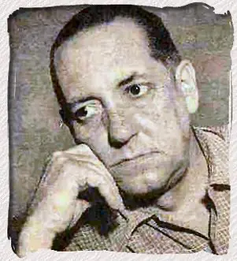

La historia, se dice, está en los ojos del espectador. Los persas obviamente no podrían haber visto la conquista que lideró Alejandro de Macedonia y sus falanges sobre su vasto imperio de satrapías de la misma manera que los macedonios o los romanos. Con la quema de Persépolis por parte de un Alejandro embriagado (o calculador) caía el imperio persa. Miles fueron masacrados, esclavizados o exiliados. No importan las leyendas de asimilación que nos transmitieron - como las de un Alejandro que respetaba las costumbres autóctonas de los conquistados o se indignara ante la destrucción de la tumba de Darío, que luego, mandaría a reparar - la destrucción y el caos que a cada estadío de sus campañas hubo de ocurrir y que se extendería hasta las orillas del río Ganges sería suficiente para consolidar el juicio sobre su personalidad en la historia. Aunque visionario debió ser un megalómano cruel y despiadado.
Brian Bosworth, en su brillante ensayo donde compara a Alejandro de Macedonia con Hernán Cortez, nos narra:
Consideremos la escena final en el Gránico, cuando los 20000 mercenarios griegos quedaron abandonados en el campo de batalla para ser rodeados por el ejército victorioso de Alejandro, con la falange presionando su frente y la caballería acosando los costados y la retaguardia. El rey hizo caso omiso de su petición de cuartel, y se produjo una masacre. Independientemente de que el 90 por ciento fueran talados o no, como dan a entender Arriano y Plutarco, no hay duda de que muchos miles cayeron, y las circunstancias no habrían sido agradables. Dados los grandes escudos circulares de los griegos y su formación masiva, las heridas infligidas por las sarisas habrían sido predominantemente en la cara y la garganta; de lo contrario, en la ingle. Hubo una escena similar al final de la batalla del Hidaspes, cuando la línea de batalla india quedó atrapada por la falange y un cordón de caballería macedonia, y el horror de la matanza se intensificó por los elefantes enloquecidos atrapados dentro de su propia masa desorganizada de soldados e infantería y aplastando indiscriminadamente todo a su paso. Pocos comandantes han sido más expertos que Alejandro en crear las condiciones para una matanza masiva, y sus tropas desarrollaron una eficiencia terrible en la matanza. La conquista tuvo un alto precio en sangre y agonía. Es posible que vastas áreas del oeste hayan caído en sus manos sin resistencia seria, pero desde la gran rebelión de Sogdiana en el verano de 329 hasta su invasión del Makran en octubre de 325 hubo combates casi continuos, decenas de ciudades destruidas y poblaciones enteras, civiles y militares por igual, masacradas.
Otros, sin embargo, argumentan que no deberíamos apresurarnos en juzgar a Alejandro, hacerlo sería un anacronismo, al fin y al cabo, las guerras de conquista eran entonces tan comunes como necesarias. Sin las campañas de Alejandro, además, no se hubieran fundado ciudades como Alejandría con su gran biblioteca y escuela neoplatónica. Las rutas de intercambio cultural y económico entre el este y el oeste no habrían podido ser establecidas. Con la entrada del discípulo de Aristóteles y sus temibles legiones a los Balcanes, Egipto, Siria, Babilonia y la India, la historia simplemente progresaba en su afán de integrar a la especie humana.
Recordemos por un instante a Platón en su Critias o de la Atlántida, donde expresa una visión de la guerra en el pasado lejano y mítico como algo común.
“Los trabajos de la guerra eran entonces comunes a las mujeres y a los hombres…”
En el año 335 a. e. c., a solo unos años de fallecer Platón, los trabajos de la guerra serían nuevamente ordinarios en el mundo helénico. También parecían necesarios, al menos dentro de la corte macedónica, para consolidar lo que llamaban la concordia entre los griegos o panhelenismo.
En los finales del siglo XX los entusiastas de la globalización alababan el fin de la historia, o al menos de la historia que hacía de la guerra algo común e inevitable. Con la caída del muro de Berlín, la ideología de la globalización, esa especie de panhelenismo contemporáneo, estaba en su apogeo. La globalización como fenómeno se reflejaba en el incremento de los intercambios económico-comerciales y de tipo socio-cultural a nivel internacional. La incorporación de nuevos estados a sistemas financieros y bloques militares instituidos por los EE. UU. y Europa ocurría aceleradamente. A finales del siglo XX, la realización de ese noble sueño integrador que comenzó siglos atrás con los griegos y su anhelo de concordia parecía posible.
Pero si a Platón le pareció historia antigua eso de los trabajos de la guerra, para los entusiastas de la globalización a finales del siglo XX la paz habría definitivamente de durar muy poco. La globalización del siglo XXI, como la del siglo IV a.e.c. no estaría exenta de violencia. A solo una década del fin de la historia, la terrible pesadilla de la guerra inevitable reaparece e irónicamente en los mismos lugares por donde una vez marcharon las falanges de Alejandro. Afganistán, Iraq, Libia, Siria. Persépolis ardía nuevamente. Algunos increparán que estos conflictos no clasifican como guerras de conquista. Esto sin elaborar en el total de civiles masacrados en Iraq - figura que sobrepasa los cientos de miles - por la conquista de los hidrocarburos.
Hoy en día es Ucrania. En la voz del Kremlin la invasión de Ucrania no sería más que una operación militar especial. Paradójicamente son los Ucranianos los que defienden el modelo integracionista mientras los rusos justifican la invasión con una ideología anti-globalizadora que alude a la erosión de una cierta identidad ruso-eslávica establecida en el siglo X por Oleg de Nóvgorod (ver el artículo de Vladimir Putin "Sobre la unidad histórica de rusos y ucranianos"). Propaganda aparte, la narrativa de la globalización que se desglosaba a fines del siglo pasado se ha evaporado por completo en la segunda década del siglo XXI. En su lugar viejos nacionalismos resurgen. A la historia al parecer le gusta repetirse. El hecho de que un nuevo conflicto nuclear emane de la guerra entre Rusia y Ucrania resultaría en la destrucción de la especie humana y el fin verdadero de la historia.
Citas
Bosworth, B. (2000). A Tale of two empires: Hernan Cortes and Alexander the Great.
In A. B. Bosworth, & E. J. Baynham (Eds.), Alexander the Great in Fact and Fiction (Vol. 1, pp. 23-49).
Oxford University Press.
Schliemann y Dickens

Charles Dickens en su famoso periódico semanal de fines del siglo XIX "All The Year Around" nos cuenta de Heinrich Schliemann, su vida y su método para aprender el inglés ("Dr. Schliemann", Junio 13 de 1874).
Schliemann, famoso por su descubrimiento de las ruinas de Troy, era un polígloto que conocía 17 lenguas. Ambos, Dickens y Schliemann, se profesaron respeto durante sus vidas.
Antes de alcanzar la fama como excavador de Troya y Micenas, Heinrich Schliemann visitó Estados Unidos y Cuba en el invierno de 1867-68 en un viaje de negocios.
Como era su costumbre cuando viajaba, llevaba su diario en el idioma del país en el que se encontraba. De este diario nos enteramos de que en la tarde del 3 de enero de 1868 asistió a la lectura de Dickens de "Un cuento de Navidad" en el Steinway Hal, 14th Street, Nueva York.
Schliemann era un observador perspicaz. Dos figuras importantes del milieu cultural de la segunda parte del siglo XIX comentan uno acerca del otro.
Schliemann acerca de Dickens.
"Nueva York, 4 de enero de 1868. Fui anoche a la conferencia de Charles Dickens en la calle 14; conseguí un asiento por $3; El inmenso salón estaba abarrotado al igual que las galerías. Parecía tener unos 50 años pero estaba bien alimentado y preservado.
Tenía ante sí un libro que nunca utilizaba porque se lo sabía de memoria y, cosa extraña, sin mirarlo, siempre pasaba las páginas al llegar al final de uno, tan bien que estaba familiarizado con él.
Cada palabra tal como estaba en las páginas. Leyó un villancico (sic) —una composición de gosts (sic) y patrañas—, pero aun así, por la forma en que lo pronunció y por sus gestos, agradó a todos".
Dickens acerca de Schliemann y su capacidad para el aprendizaje de lenguas.
"Para empezar, el joven Schliemann se dedicó con gran celo a aprender inglés.
La necesidad le hizo dar con un recurso que le facilitó enormemente el estudio de las lenguas.
Esto consistía en leer mucho en voz alta, nunca hacer traducciones, tomar una lección diariamente para no perder el sonido del habla desconocida, escribir composiciones sobre temas de particular interés individual y corregirlas bajo la mirada del maestro; aprender de memoria todas esas correcciones y recitarlas palabra por palabra en la lección del día siguiente.
Su memoria no era buena al principio, porque no la había ejercitado desde la infancia, pero mejoró a fuerza de esfuerzo, y el muchacho aprovechaba cada momento libre.
De hecho, incluso robó tiempo para poder aprender. Nunca iba a hacer un mandado, aunque lloviera, sin tener un libro en la mano y aprender algo de memoria; nunca hizo cola en el correo cuando esperaba para las cartas de su patrón, sin leer mientras tanto. Su memoria se fue fortaleciendo poco a poco y en seis meses dominaba por completo el idioma inglés.
Por maravillosa que parezca esta afirmación, está ampliamente confirmada por las excelentes cartas en inglés que el Doctor escribió últimamente a la Academia, que no fueron traducidas, como suele ocurrir con las contribuciones de corresponsales extranjeros.
Luego aplicó el mismo sistema al francés, que también dominó en otros seis meses, afirmación corroborada nuevamente por la circunstancia de que las primeras y poco conocidas obras del señor Schliemann fueron escritas por él mismo en el francés más elegante y sencillo.
En efecto, debe poseer aptitudes para aprender lenguas, aunque él mismo sólo dé crédito a su aplicación, que ciertamente merece todo el crédito y estima. Estos estudios forzados y excesivos habían fortalecido tanto su memoria en un año que la adquisición de holandés, español, italiano y portugués parecía una tarea fácil, y no estaba obligado a dedicar más de seis semanas de aprendizaje a cada uno de ellos para poder aprender leerlos y escribirlos con bastante fluidez.
Esto parecería casi increíble si no viniera de un hombre a quien nada caracteriza más que una veracidad severa y a menudo intransigente".
Jaques Monod: El segundo secreto de la vida

Jacques Monod publicó su tratado filosófico El azar y la necesidad en el año 1970.
Anteriormente había compartido el premio Nobel de fisiología o medicina junto a François Jacob y André Lwoff por elucidar el mecanismo de formación de proteínas en las células a través del mensajero-RNA.
Durante la ocupación nazi de Francia, Monod vivió una doble vida, diseñando experimentos en su laboratorio del Instituto Pasteur durante el día y llevando a cabo operaciones clandestinas como parte de la Resistencia por la noche.
Llegó a ser promovido a comandante de las Forces françaises de l’Intérieur, en cuyo rol, según Sean B. Carroll, coordinó sabotajes y el asesinato de traidores que colaboraron con el Tercer Reich.
En el verano de 1944, dirigió junto a otros oficiales los actos de insurrección que permitieron la entrada del general Patton a Paris y la eventual liberación de la ciudad.
Monod propuso el concepto de alostería, pilar de la biología que describe como las moléculas orgánicas se plegan de acuerdo a su estructura geométrica en ciertas zonas del ADN, expresando la producción de enzimas.
Estas enzimas, encargadas a su vez de acelerar las reacciones bioquímicas dentro de las células, pueden ser activadas o inhibidas al acoplarse con otras moléculas específicas reguladoras.
La alostería entonces funciona como un circuito de control eléctrico.
Cuenta Agnes Ullmann, que un día, a finales de 1961, Monod entró en su laboratorio cansado y preocupado.
Llegó, se sentó, y luego de permanecer en silencio por varios minutos, la miró fijamente y le dijo: “Creo que he descubierto el segundo secreto de la vida”. Se refería, por supuesto, a su concepto tan importante de alostería o regulación alostérica.
El azar y la necesidad es un libro brillante.
Es un ensayo donde Monod expone elegantemente su concepción de la vida como resultado de la mecánica y la química del mundo inorgánico
El papel que juegan la estructura y el funcionamiento de las macromoléculas (proteínas, ácidos nucleicos) en los procesos fundamentales que se desarrollan en todos los seres vivos es explorado con minucidad filosófica por el autor.
Monod explica en su libro los procesos bioquímicos básicos y la complejidad cibernética celular que hace posible la vida. La fluidez conque se desenvuelve su análisis, la coherencia narrativa, la exposición de limitaciones científicas y paradojas epistemológicas, y la claridad general de su pensamiento demuestran su honestidad, rigor y profundidad intelectual.
Es cierto que Monod pareciera escribir con una cierta ingenuidad filosófica; y así se le atribuyen al El azar y la necesidad, específicamente los capítulos en los que extrapola de la biología implicaciones de tipo filosófico, varios epítetos como el reduccionismo o la arrogancia. Tengo el presentimiento que sus críticos están motivados por cierto rencor profesional devenido del entrometimiento de un hombre de ciencia en la filosofía (o quizás cierta nostalgia por los antropocentrismos) o la ignorancia de lo que constituye un pensamiento que sienta pautas paradigmáticas. Y es que este ensayo es un clásico en el que se exponen ideas profundas basadas en una ciencia naciente de la cual su autor fue uno de sus principales exponentes.
Concluye Monod que la vida es un resultado del azar y que, tal como lo prescribían los existencialistas de su generación, el deber del ser humano entonces “no está escrito en ninguna parte. Puede este escoger entre el Reino y las tinieblas.”
A continuación, dos fragmentos del libro, una lista de lecturas y una entrevista suya, la cual he traducido al español.
Fragmentos, El Azar Y La Necesidad, de Jaques Monod.
“Sólo el azar está en el origen de toda novedad, de toda creación en la biósfera.
El puro azar, el único azar, libertad absoluta pero ciega, en la raíz misma del prodigioso edificio de la evolución: esta noción central de la biología moderna no es ya hoy en día una hipótesis, entre otras posibles o al menos concebibles.
Es la sola concebible, como única compatible con los hechos de observación y experiencia.
Y nada permite suponer (o esperar) que nuestras concepciones sobre este punto deberán o incluso podrán ser revisadas.
"…todas las propiedades de los seres vivos reposan sobre un mecanismo fundamental de conservación molecular.
Para la teoría moderna, la evolución no es de ningún modo una propiedad de los seres vivos, ya que tiene su raíz en las imperfecciones mismas del mecanismo conservador que constituye su único privilegio.
Es preciso, pues, decir que la misma fuente de perturbaciones, de «ruido» que, en un sistema no vivo, es decir no replicativo, aboliría poco a poco toda estructura, es el origen de la evolución en la biósfera,
y demuestra su total libertad creadora, gracias a este conservatorio del azar, sordo al ruido tanto como a la música: la estructura replicativa del ADN.”
Citas
Carroll, Sean B.Brave Genius: a Scientist, a Philosopher, and Their Daring Adventures from the French Resistance to the Nobel Prize. New York: Broadway Books, 2014.
Farabola (https://commons.wikimedia.org/wiki/File:Jacques_Monod_1971.jpg), „Jacques Monod 1971“, marcado como dominio público, para más detalles véase Wikimedia Commons: https://commons.wikimedia.org/wiki/Template:PD-Italy
Monod, Jacques. Chance and Necessity: an Essay on the Natural Philosophy of Modern Biology. London: Collins, 1972.
Agnes Ullmann, In Memoriam: Jacques Monod (1910-1976), Genome Biology and Evolution, Volume 3, 2011, Pages 1025-1033, https://doi.org/10.1093/gbe/evr024
Aquí una entrevista con Jaques Monod en YouTube que he traducido al castellano.
Al comienzo de su ensayo “Borges, Neruda y Pessoa: el Whitman Hispano-Portugués” publicado en su libro El Cánon Occidental el crítico literario estadounidense Harold Bloom nos recuerda que Alejo Carpentier fue uno de los tres fundadores del boom de la literatura hispano-americana del siglo XX junto a Borges y a Neruda.
Bloom, además, vaticina que el tiempo se encargará de ubicar a Carpentier en la cúspide como el más importante de todos los escritores latinoamericanos de su tiempo.
Dentro del magnífico opus carpenteriano, Los Pasos Perdidos es la primera novela del autor que leí y continúa siendo mi favorita.
Novela magnífica en la que contemplamos el accionar de personajes en su conflicto con el tiempo y la naturaleza.
Fragmento, Los Pasos Perdidos, de Alejo Carpentier.
“Es indudable que la naturaleza que aquí nos circunda es implacable, terrible, a pesar de su belleza.
Pero los que en medio de ella viven la consideran menos mala, más tratable, que los espantos y sobresaltos, las crueldades frías, las amenazas siempre renovadas, del mundo de allá.
Aquí, las plagas, los padecimientos posibles, los peligros naturales, son aceptados de antemano: forman parte de un Orden que tiene sus rigores.
La Creación no es algo divertido, y todos lo admiten por instinto, aceptando el papel asignado a cada cual en la vasta tragedia de lo creado.
Pero es tragedia con unidades de tiempo, de acción y de lugar, donde la misma muerte opera por acción de mandatarios conocidos, cuyos trajes de veneno, de escama, de fuego, de miasmas, se acompañan del rayo del trueno que siguen usando, en días de ira, los dioses de más larga residencia entre nosotros.
A la luz del sol o al calor de la hoguera, los hombres que aquí viven sus destinos se contentan de cosas muy simples, hallando motivo de júbilo en la tibieza de una mañana, una pesca abundante, la lluvia que cae tras de la sequía, con explosiones de alegría colectiva, de cantos y de tambores, promovidos por sucesos muy sencillos como fue el de nuestra llegada.”
Citas
Bloom, Harold. The Western Canon: the Books and School of the Ages. Basingstoke: Papermac, 1996.
Carpentier, Alejo. El Reino De Este Mundo ; Los Pasos Perdidos. Mexico, D.F.: Siglo Veintiuno Editores, 1985.

Imagen de Fair use.
{kind=link}
{kind=link}